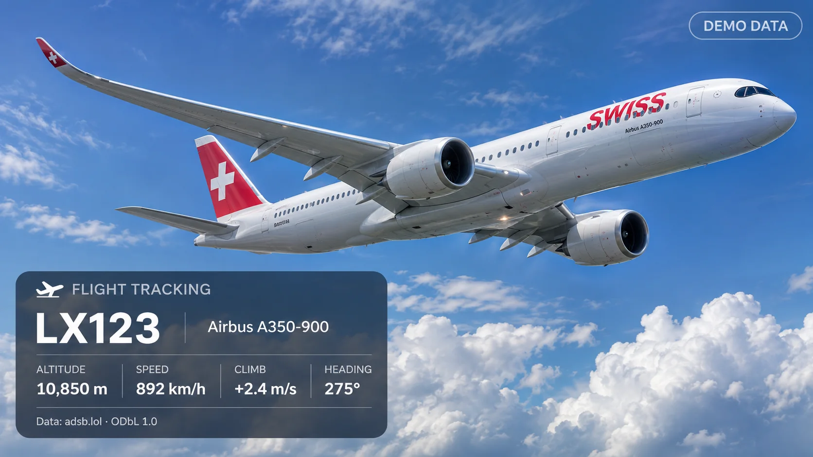

Données de vol
Données de vol en direct dans la vidéo depuis votre propre récepteur ADS-B : ce qu’il vous faut, où cela fonctionne, confidentialité.
Disponibilité : les données de vol en direct ne sont disponibles que dans les pays et régions approuvés et nécessitent votre propre récepteur ADS-B. Aucune région n’est approuvée pour l’instant ; la fonction reste donc désactivée partout.
Avec l’affichage des données de vol, Keepsight montre le numéro de vol, l’altitude et la vitesse de l’avion de ligne que vous suivez, dans le viseur et dans la vidéo enregistrée par l’iPhone. Les données proviennent de votre propre récepteur ADS-B sur le même Wi-Fi. Ni Internet ni fournisseur de données de vol n’interviennent.
Keepsight suit les avions à vue, sans aucun récepteur. Le récepteur ne sert qu’à l’affichage et ne fait pas partie de l’app : vous l’achetez ou le construisez séparément.

Ce qu’il vous faut
- Un récepteur : un Stratux, par exemple un Raspberry Pi 3 avec une clé USB de réception 1090 MHz et une antenne, ou un autre appareil qui envoie du GDL90 par Wi-Fi.
- Pas une clé seule : une clé USB de réception comme la FlightAware Pro Stick a besoin d’un hôte, par exemple un Raspberry Pi avec Stratux. Une installation PiAware standard envoie des données à FlightAware et ne convient pas.
- Le même Wi-Fi : l’iPhone rejoint le Wi-Fi du récepteur. Ce réseau n’a généralement pas d’accès à Internet ; c’est normal.
- Une région approuvée : recevoir vous-même les données ne signifie pas à lui seul que la fonction est autorisée dans un pays.
Stratux ou GDL90
| Récepteur | Connexion | Testé avec Keepsight |
|---|---|---|
| Stratux (JSON) | WebSocket vers le récepteur, généralement à l’adresse 192.168.10.1 | Pas encore |
| GDL90 (UDP) | Le récepteur envoie vers le port 4000 de l’iPhone | Pas encore |
Les deux sont pris en charge au niveau du protocole. Aucun récepteur n’a encore été testé avec Keepsight sur du matériel réel ; certains appareils, comme le SkyEcho 2, peuvent se comporter différemment. Le trafic émis uniquement par FLARM n’est pas pris en charge.
Activation
- Ouvrez les réglages et activez Afficher les données de vol (ADS-B).
- Lisez l'avis et touchez Accepter et activer. Ce n'est qu'ensuite qu'iOS demande votre position.
- Rejoignez le Wi-Fi du récepteur, choisissez le type de récepteur et saisissez son adresse. iOS demande une fois l’accès au réseau local.
- Touchez Connecter le récepteur. Keepsight ne se connecte jamais de lui-même.
- Choisissez Avion comme sujet et pointez l'appareil vers l'avion.
Si plusieurs avions correspondent à la direction de visée, Keepsight ne devine pas : touchez Sélection de l'avion requise et choisissez le bon.
Vous choisissez toujours l’avion vous-même, dans la liste des avions de ligne actuellement reçus. La liste indique l’âge de chaque position en secondes.
Les réglages indiquent l’état de la connexion : connexion en cours, connecté sans avion, réception ou données périmées. Reconnecter relance la connexion.
Les réglages des données de vol n’apparaissent que lorsque Avion est le sujet sélectionné.

Pourquoi Keepsight a besoin de votre position
iOS ne demande votre position que lorsque vous activez l’affichage des données de vol et donnez votre accord. Keepsight en a besoin pour deux raisons :
- Vérifier la région : l'affichage des données de vol dépend du pays où vous vous trouvez. Keepsight le détermine à partir de l'endroit où se trouve réellement l'iPhone, sur l'appareil lui-même.
- Reconnaître l'avion à l'image : Keepsight calcule la direction et l'angle au-dessus de l'horizon entre vous et chaque avion, puis les compare à la direction de visée de l'appareil. La boussole a elle aussi besoin de la position pour trouver le nord géographique.
La saisie manuelle d'un lieu n'est pas proposée, car la vérification régionale ne serait alors plus fiable. Si vous n'utilisez pas les données de vol, Keepsight ne demande jamais votre position.
Où cela fonctionne
Keepsight détermine le pays sur votre iPhone à partir de votre position actuelle. Le pays de l'App Store, la langue ou l'adresse internet n'entrent pas en compte. Près d'une frontière et en mer, la fonction reste désactivée.
Chaque pays est examiné individuellement avant d'être approuvé. D'ici là, l'app vous indique que les données de vol en direct ne sont pas disponibles dans votre région. Le suivi et l'enregistrement fonctionnent comme d'habitude.
Ce qui quitte votre iPhone
Rien. Keepsight se contente d’écouter le récepteur et ne modifie jamais ses réglages. Ni votre position ni des données de vol ne sont envoyées à un serveur.
Les données de vol n’existent que dans la mémoire de l’iPhone tant que le récepteur est connecté. Elles sont effacées lorsque vous déconnectez, choisissez un autre sujet ou quittez l’app. Rien n’est enregistré ni sauvegardé.
Affichage
Les données de vol ne sont affichées que pour les vols réguliers de passagers et de fret de compagnies aériennes connues. Les avions privés, d'affaires, militaires et gouvernementaux n'apparaissent jamais, et ni l'immatriculation ni l'adresse OACI d'un avion ne sont affichées.
Le type d’avion ne fait pas partie de l’ADS-B et n’est donc pas affiché. Les données qu’un récepteur ne fait que relayer, comme OGN, FLARM ou TIS-B, ne sont jamais affichées non plus.
Choisissez le coin, l’affichage compact ou détaillé et les unités métriques ou impériales. Les données de plus de 15 secondes sont masquées au lieu de rester figées. Chaque vidéo avec données de vol porte la mention « Flight data: Local ADS-B ».
L'affichage est inscrit dans les vidéos enregistrées avec l'iPhone. Un appareil monté sur le stabilisateur enregistre de son côté et ne reçoit aucun affichage.
En option, Keepsight oriente la nacelle vers la position signalée de l’avion choisi tant qu’il n’est pas encore visible dans l’image. La boussole limite la précision.
Exactitude
Les données de vol peuvent être retardées, incomplètes ou erronées. Elles sont fournies à titre d'information uniquement et ne conviennent pas à la navigation, à la sécurité aérienne ni aux décisions opérationnelles.